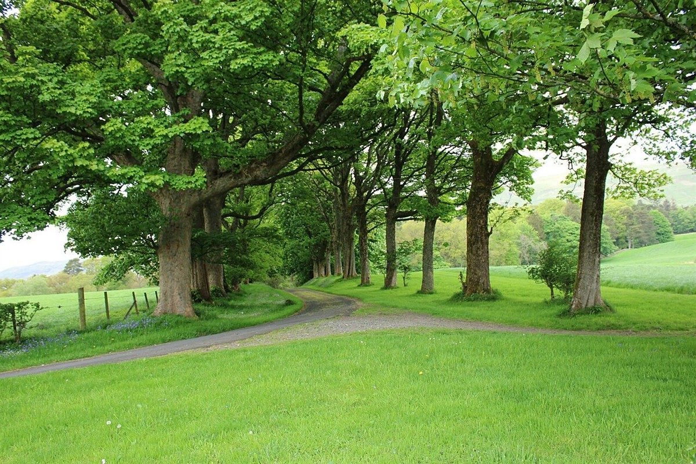
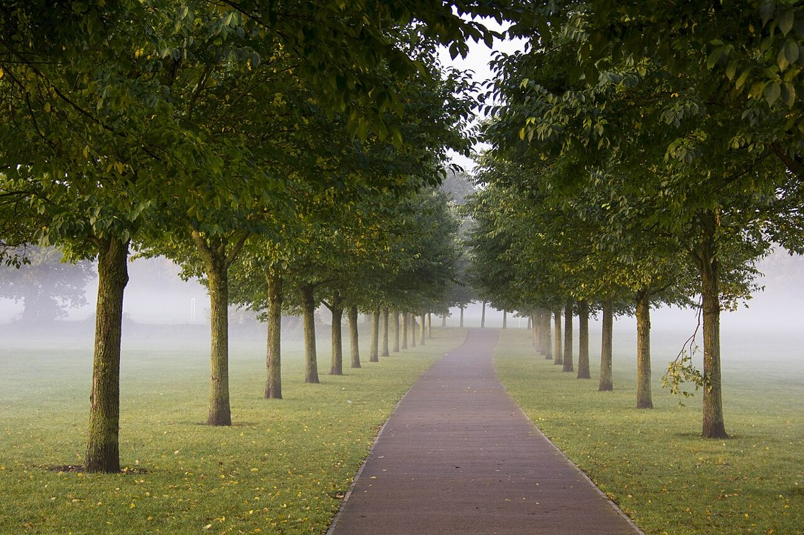

カフェ / 鹿児島県南さつま市
おいでおいで
鹿児島県南さつま市にあるカフェ「おいでおいで」のご案内ページです。営業時間やメニューなど、詳しいことは準備中。まずはInstagramをのぞいてみてください。
制作側の連想
「おいでおいで」から、遠くの一点へ
店名の由来や意味は分かりません。制作側は、この響きから「呼ばれて、少しずつ近づいていく」様子を連想し、道が遠くの一点へ細くなっていく一点透視(消失点)をこのサイトのテーマにしました。ページの放射状の線や、奥へ小さくなっていく写真は、すべてその連想によるデザインです。制作側の連想で、お店の理念・由来とは無関係です。
五つの距離(イメージ)
だんだん近づく、五枚。
写真はお店周辺の風景ではありません。「近づいていく」イメージで選んだ、国外・撮影地不明のフリー素材です。
- とおく

国外のイメージ(英国) - すこし

国外のイメージ(英国) - もうすこし

撮影地不明のイメージ - あと少し

国外のイメージ(英国) - もうすぐ

国外のイメージ(ドイツ)
ご案内
お店のこと(確認できたものだけ)
| 所在地 | 〒899-3403 鹿児島県南さつま市金峰町尾下２３０１−１ |
|---|---|
| 電話 | 0993-78-3678 |
| 営業時間 | 準備中 |
| 定休日 | 準備中 |
| ご予約 | 準備中 |
| 駐車場 | 準備中 |
| SNS | Instagram @oide_oide_kagoshima |